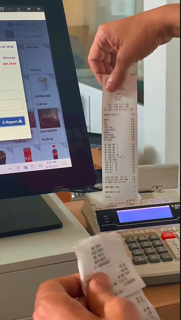
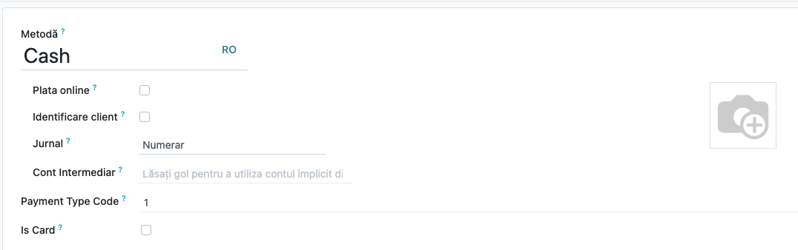
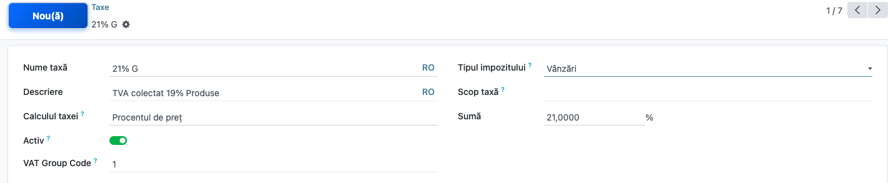
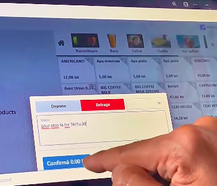
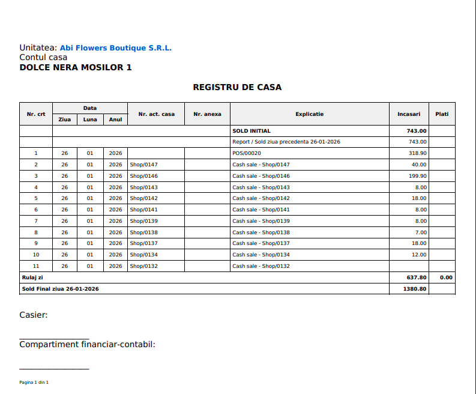
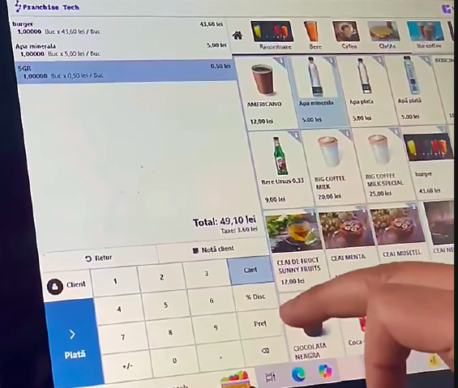

Professional Fiscal Receipt Printing
Easily print fiscal receipts directly from Odoo. This module connects your Point of Sale to your fiscal cash register using the FiscalNet.ro driver.
Easily print fiscal receipts directly from Odoo. This module connects your Point of Sale to your fiscal cash register using the FiscalNet.ro driver.
Receipts are generated and printed automatically after every sale.
Works with Datecs, Daisy, Olivetti, Partner, Sam4S, Tremol, and more.
Easily generate Z-Reports and Cash Book (Registrul de Casă) reports.
Receipt Printing & Z-Reports
Seamlessly print fiscal receipts and daily closing reports directly from the POS interface.

Payment & Tax Setup
Configure tax IDs and payment methods to match your fiscal register requirements perfectly.


Cash Operations & Reporting
Manage cash-in/out and print the official Cash Book report for your accountant.


SGR Recycling Guarantee
Automatically adds the Romanian SGR guarantee (0.50 RON) to plastic products in the Point of Sale.

Designed for Romanian retailers, hospitality businesses, and pharmacies that need a reliable, Odoo-integrated fiscal solution.